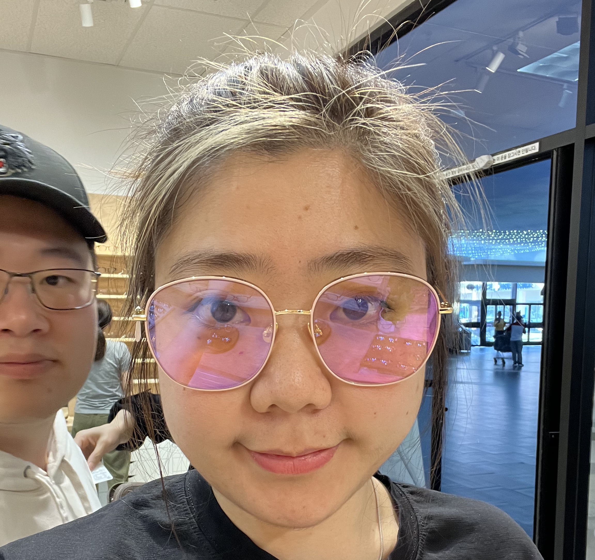
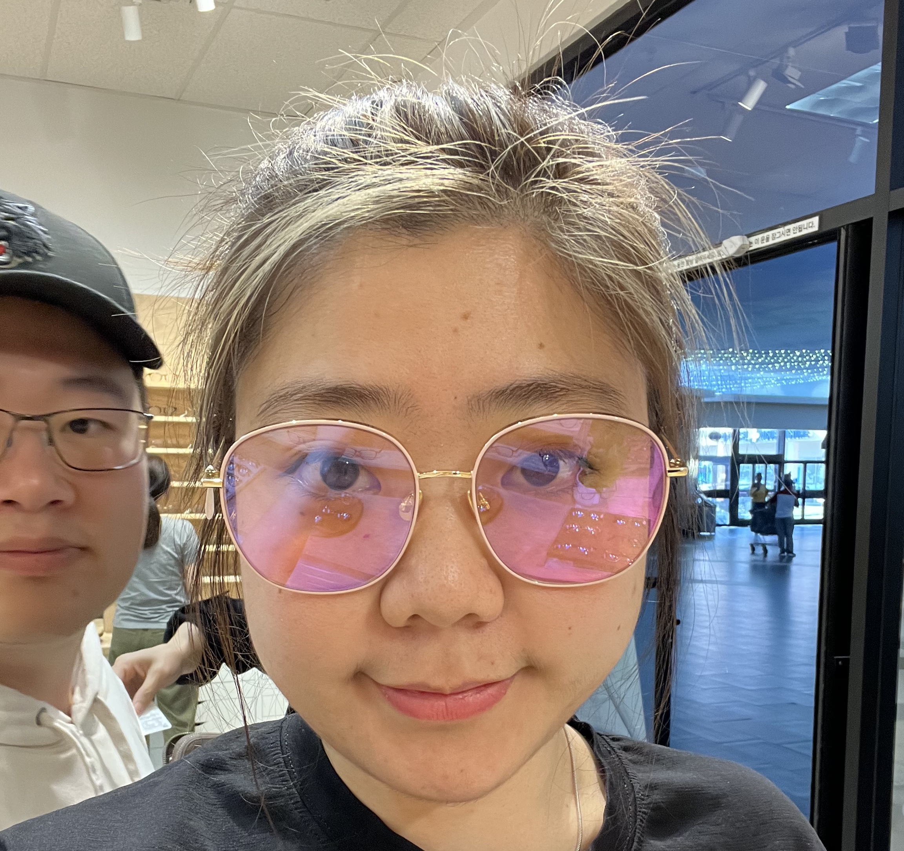
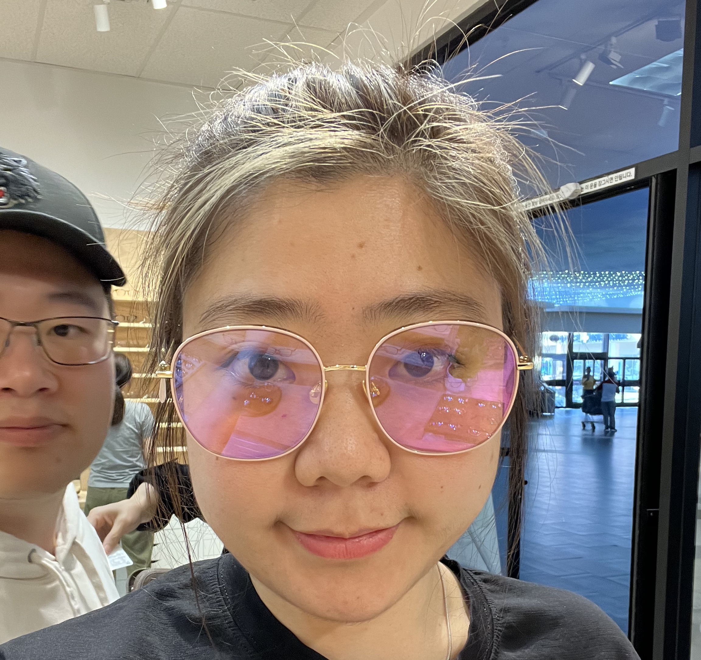

Tuiter
Profile
 
Edit profile

Edit profile
WebDev
Yiqian, a student studying web dev in NorthEastern University
Joined Spring 2022
1 Following 234 Followers
Back
TuiterProfile

Edit profile
WebDevYiqian, a student studying web dev in NorthEastern University Joined Spring 2022 1 Following 234 Followers |
|